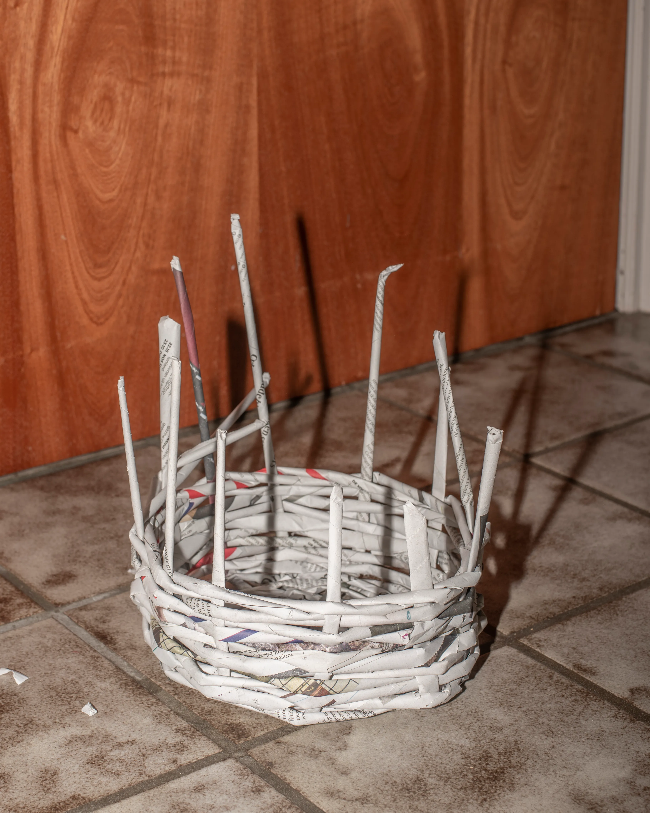
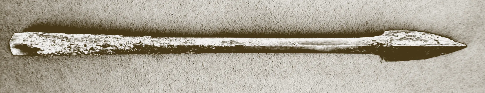
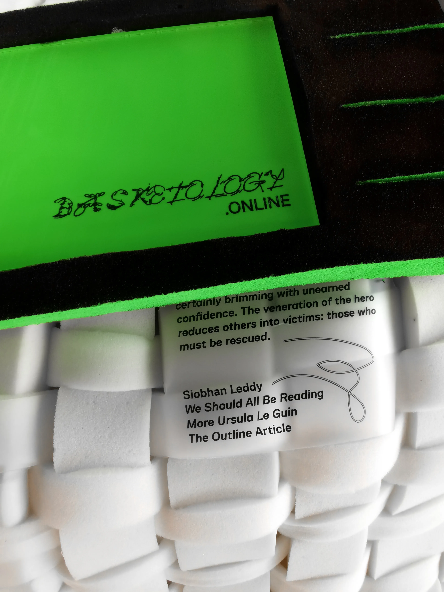

Basketology
ROLE(S)
FORMAT
YEAR
Designer / Researcher / Writer
Identity, Publication, Event, Podcast
2021
In *The Carrier Bag Theory of Fiction* (1986), Ursula K. Le Guin proposes that humanity’s first cultural
tool was not the spear, a symbol of violence and dominance, but the basket, a vessel for gathering and
sustaining life. The spear, however, became the central figure in cultural storytelling, as narratives of
heroic individualism—like killing a mammoth—are easier to convey than the collective, nurturing efforts of
activities like fruit-picking.
*Basketology*, created as part of the 2021 BA Graphic Design graduation project, embraces this alternative view of storytelling. It challenges dominant, binary, and patriarchal narratives, using the physical and cultural symbolism of the basket as a metaphorical guide for re-examining socio-political structures. The project explores how the basket’s associations with care, collaboration, and resourcefulness can inspire new ways of defining identity and community within our socio-political landscape.
At the KABK graduation festival, visitors engaged with *Basketology* by sitting on hand-woven furniture and exploring the project’s digital platform. This platform featured diagrams, imagery, and interviews with a range of scholars, artists, and organizations, including Louise Sandhaus, Aggie Toppins, and Mindy Seu. *Basketology* was awarded the Waag Technology & Society Award and continues to develop through workshops and lectures.
*Basketology*, created as part of the 2021 BA Graphic Design graduation project, embraces this alternative view of storytelling. It challenges dominant, binary, and patriarchal narratives, using the physical and cultural symbolism of the basket as a metaphorical guide for re-examining socio-political structures. The project explores how the basket’s associations with care, collaboration, and resourcefulness can inspire new ways of defining identity and community within our socio-political landscape.
At the KABK graduation festival, visitors engaged with *Basketology* by sitting on hand-woven furniture and exploring the project’s digital platform. This platform featured diagrams, imagery, and interviews with a range of scholars, artists, and organizations, including Louise Sandhaus, Aggie Toppins, and Mindy Seu. *Basketology* was awarded the Waag Technology & Society Award and continues to develop through workshops and lectures.





SEE ALSO